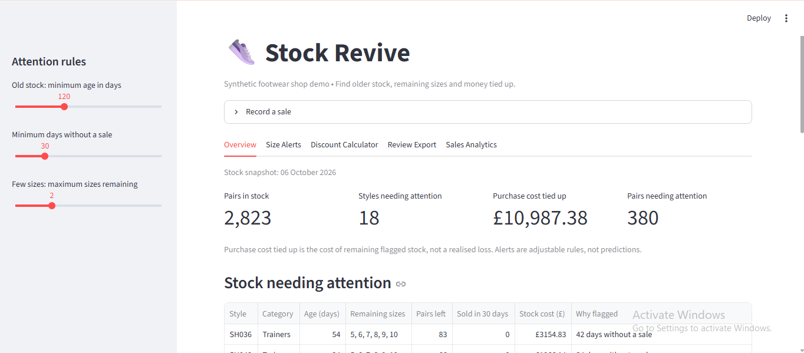
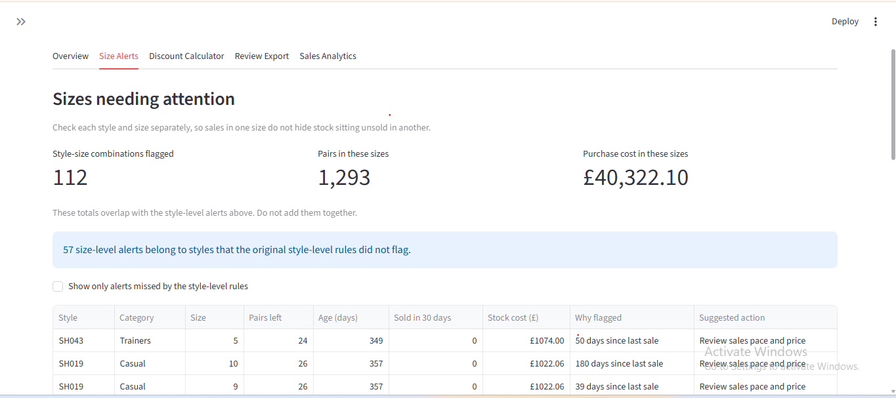
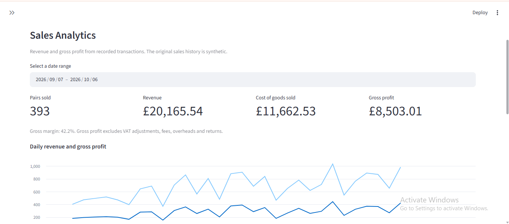

It started with something I had seen for years
Growing up around my family's footwear retail business in Nepal, I noticed something interesting about how inventory moves. A new shoe design arrives, customers like it, and the popular sizes sell quickly. But a few sizes remain on the shelves.
Eventually, newer designs arrive, attention shifts, and those remaining pairs become easier to overlook. The shoe might have sold well overall, but that doesn't mean every size has sold well. For a small retailer, unsold stock also represents money tied up in inventory.
That question became the starting point for Stock-Revive.
Understanding the problem before writing code
My initial idea was simple: identify older inventory and help shop owners decide what deserves attention. But stock age alone wasn't enough.
Consider two shoe designs that have both been in a shop for six months. One continues to sell across different sizes. The other has only a few sizes remaining, none of which have sold recently. Both are old, but they shouldn't necessarily be treated the same way.
That led me to focus on three questions:
- How old is the stock?
- How long has each individual size gone without a sale?
- How many sizes of that design are still available?
These became the foundation of the application's transparent, adjustable, rule-based alerts.
Building Stock-Revive
I built the prototype using Python, Pandas, SQLite and Streamlit. It combines inventory monitoring, size-level stock alerts, sales analysis and transaction recording in one interface.

I wanted it to do more than display a static dataset. Using SQLite, I implemented persistent inventory and sales records. When a valid sale is recorded, the application writes the sales transaction and decreases available inventory in one database transaction. I also added validation to prevent overselling.
Those details may not be the most visually impressive parts of a dashboard, but they matter if the data is going to inform real decisions.
A note about the data
My family's business doesn't currently have structured historical records suitable for this analysis. Rather than present simulated numbers as real business findings, I generated a reproducible synthetic dataset covering 50 footwear styles, each with sizes 5–10.
It includes different simulated patterns: popular new stock, older fragmented stock, older stock selling steadily, and recent slow-selling products. These scenarios let me test the rules, but they do not prove the app improves real shop profitability.
The most interesting part: choosing when to raise an alert
One question was more interesting than I expected: How many days without a sale should make a size worth reviewing?
I compared inactivity thresholds of 30, 60 and 90 days. Here is what happened to the remaining size-level alerts under the synthetic scenarios:
| Simulated stock scenario | 30 days | 60 days | 90 days |
|---|---|---|---|
| Older fragmented sizes | 25 | 25 | 25 |
| Older steadily selling sizes | 27 | 14 | 9 |
| Recent slow-selling sizes | 60 | 10 | 0 |
All three thresholds identified the 25 remaining sizes in the older fragmented-stock scenario. Raising the inactivity threshold reduced alerts for other scenarios substantially.
Shorter thresholds give the shop owner an earlier and longer review list. Longer thresholds reduce the number of items demanding attention, but could delay the review of potentially interesting stock.
That's why the thresholds are adjustable rather than fixed to one assumed rule for every retailer.

Turning analysis into something actionable
Identifying potentially neglected stock is only the first step. The shop owner still has to decide what to do.
Stock-Revive suggests three types of review action:
- Check display and customer interest.
- Review the sales pace and pricing.
- Consider a clearance review.
I deliberately kept these as suggestions rather than automatic discount decisions. A size that hasn't sold recently doesn't necessarily need a price reduction; demand may be seasonal, or the product may not be displayed prominently.
The application also includes a discount calculator to examine possible gross-profit outcomes and a sales analytics view for understanding recorded transactions. It cannot predict the demand generated by a particular discount.

What the project taught me
Working on Stock-Revive reminded me that useful analytics involves much more than making charts.
- Business understanding comes first. The wrong level of analysis can hide the problem you're trying to identify.
- Simple methods deserve consideration. Transparent, adjustable rules were a better starting point than unnecessary machine-learning complexity.
- Data integrity matters. Validating inputs and keeping stock and sales consistent are essential for a useful application.
- Limitations belong in the analysis. Synthetic data can test a design, but can't demonstrate real-world impact.
Most importantly, I learned to ask whether each insight would help someone make a decision.
What comes next?
Stock-Revive remains a local prototype. Future improvements include incoming-stock workflows, multiple deliveries per style, stronger automated tests, and eventually evaluation with real shop records when available.
With sufficient history, I would also explore demand forecasting, but only after testing whether a predictive approach adds measurable value beyond the current rules.
I'm now pursuing an MSc in Artificial Intelligence and Data Science at St Mary's University in London. Projects like this help me connect my analytics experience with problems I genuinely care about.
Explore the project
The repository includes the application code, documentation, tests and reproducible synthetic-data generator.
A 30-second project overview
Prefer a quick visual? This short preview introduces the stock-review problem and shows parts of the prototype. The full technical explanation is in the article above.
See it in action • 00:30
Want to discuss this approach? I'd be interested to hear how you identify slow-moving stock and decide when it needs attention. Connect with me on LinkedIn .